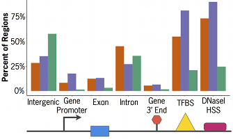
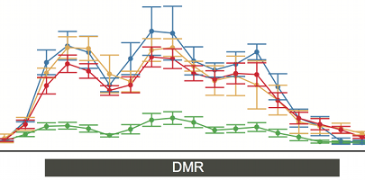

R packages by Bhasin, et al. for discovering functionally-relevant epigenomic changes in disease and development
Integrating information to place epigenome-wide results into biological contexts
Detecting differentially methylated regions (DMRs) that distinguish disease subtypes
